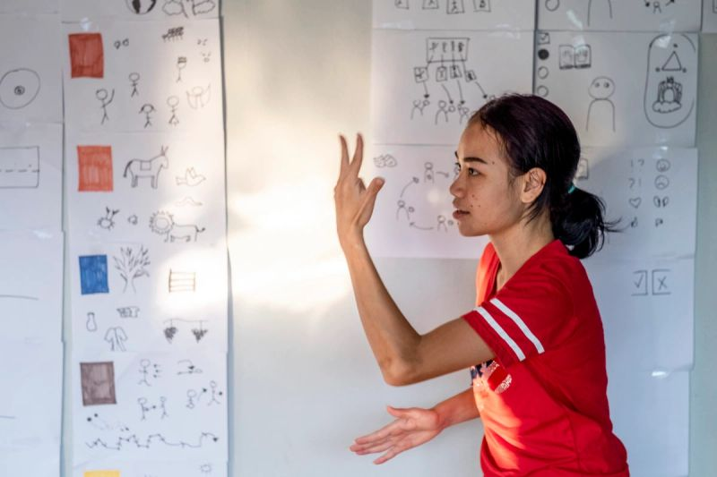

事工
装备亚洲本地同工，使他们能住在很少听见福音的人群中，并爱他们。

神正在兴起本地同工。这些忠心的弟兄姊妹熟悉语言、文化和风险，因此能进入一些最艰难的地方，包括穆斯林、民间信仰、无神论和佛教影响很深的社区。
本国传教士往往缺少付得起、又能装备他们在很少听见福音的人群中有效服事的跨文化培训。费用、路程和逼迫都会使他们难以接受装备。没有系统培训和实地经历，果效有限，也难以持续。在宗教自由不足的地方，传统的传教士和植堂培训也一再受拦。
New Asian Pathways 在亚洲设立跨文化培训中心，装备本地同工走向前线。中心提供语言学习、适合当地的福音培训和有人带领的实习。学生学习如何尊重当地文化，接触很少听见福音的人群，并开展使人作门徒的新事工。有您的支持，我们可以增加这些中心的学生人数，差派更多工人去到需要福音的地方。